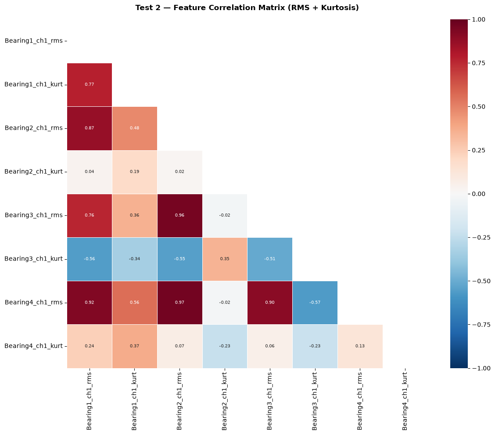

Question: what does healthy vibration look like in this dataset, what does degradation look like, and does the loading pipeline reproduce both?
Covers all three runs: the defect frequencies the rig geometry predicts, RMS and kurtosis over time for every bearing, and how the bearing that fails separates from the three that do not.
Dataset facts — source, channel counts per run, the Set 3 file-count defect, the column dictionary — are in data/README.md and nowhere else.
Code
import matplotlib.pyplot as pltimport numpy as npimport seaborn as snsfrom nasa_bearing_anomaly.config import BEARING_PARAMS, FIGURES_DIR, TEST_CONFIGfrom nasa_bearing_anomaly.loading import load_processed, load_test, save_processedfrom nasa_bearing_anomaly.physics import compute_defect_frequenciesprint("Imports OK")
Imports OK
1. Bearing Physics: Defect Frequencies
Before touching the data, let’s compute the physical frequencies we expect to see when a bearing is damaged.
Code
freqs = compute_defect_frequencies(BEARING_PARAMS)print("IMS Test Rig — Bearing Defect Frequencies")print(f" RPM: {BEARING_PARAMS['rpm']}")print(f" Shaft frequency: {BEARING_PARAMS['rpm'] /60:.2f} Hz")print()for name, hz in freqs.items():print(f" {name:12s}: {hz:7.3f} Hz")print()print("These are the frequencies we will monitor in the FFT spectrum.")
IMS Test Rig — Bearing Defect Frequencies
RPM: 2000
Shaft frequency: 33.33 Hz
BPFO_Hz : 236.403 Hz
BPFI_Hz : 296.930 Hz
BSF_Hz : 139.917 Hz
FTF_Hz : 14.775 Hz
These are the frequencies we will monitor in the FFT spectrum.
2. Load Data
If you haven’t run the loader yet:
python-m nasa_bearing_anomaly.loading --test all
Or run it here:
Code
# ── Load all three tests ──dfs = {}for test_id in [1, 2, 3]:try: dfs[test_id] = load_processed(test_id)print(f"Test {test_id}: {len(dfs[test_id])} samples, {len(dfs[test_id].columns)} columns")exceptFileNotFoundError:print(f"Test {test_id}: Not found — loading from raw files...") df = load_test(test_id) save_processed(df, test_id) dfs[test_id] = df
Test 1: 2156 samples, 50 columns
Test 2: 984 samples, 26 columns
Test 3: 6324 samples, 26 columns
Code
# Inspect Test 1 structureprint("Test 1 — first 5 rows:")dfs[1].head()
Test 1 — first 5 rows:
timestamp
filename
Bearing1_ch1_rms
Bearing1_ch1_mean
Bearing1_ch1_std
Bearing1_ch1_max
Bearing1_ch1_kurt
Bearing1_ch1_skew
Bearing1_ch2_rms
Bearing1_ch2_mean
...
Bearing4_ch1_std
Bearing4_ch1_max
Bearing4_ch1_kurt
Bearing4_ch1_skew
Bearing4_ch2_rms
Bearing4_ch2_mean
Bearing4_ch2_std
Bearing4_ch2_max
Bearing4_ch2_kurt
Bearing4_ch2_skew
file_index
0
2003-10-22 12:06:24
2003.10.22.12.06.24
0.124614
-0.094593
0.081122
0.720
1.069163
-0.029993
0.117493
-0.093880
...
0.060085
0.413
0.790250
0.046609
0.115267
-0.094235
0.066380
0.471
1.807990
0.008295
1
2003-10-22 12:09:13
2003.10.22.12.09.13
0.123811
-0.094903
0.079515
0.654
1.161552
-0.070075
0.116833
-0.093891
...
0.059420
0.420
1.234703
0.085164
0.109208
-0.087946
0.064744
0.627
1.873189
-0.053792
2
2003-10-22 12:14:13
2003.10.22.12.14.13
0.125246
-0.096187
0.080217
0.623
0.986286
-0.041646
0.118384
-0.095863
...
0.059968
0.396
0.924708
0.009609
0.113696
-0.093106
0.065253
0.601
1.429695
0.047138
3
2003-10-22 12:19:13
2003.10.22.12.19.13
0.125197
-0.095613
0.080825
0.598
1.034294
0.005162
0.119005
-0.095307
...
0.059915
0.393
0.652667
-0.037259
0.114413
-0.093244
0.066301
0.525
1.378184
0.021106
4
2003-10-22 12:24:13
2003.10.22.12.24.13
0.125618
-0.095133
0.082034
0.623
1.110164
-0.060196
0.119688
-0.095495
...
0.059255
0.376
0.635576
0.036514
0.114258
-0.093070
0.066279
0.522
1.497653
0.008626
5 rows × 50 columns
Code
print("Test 1 — column list:")for col in dfs[1].columns:print(f" {col}")
RMS (Root Mean Square) is the most direct measure of overall vibration energy. A healthy bearing has stable, low RMS. As it degrades, RMS rises — sometimes suddenly, sometimes gradually.
Kurtosis measures how heavy a distribution’s tails are — how much of the signal’s energy sits in rare, large excursions rather than in the bulk. A healthy bearing is broadband noise, close to Gaussian. When a race spalls, every rolling element passing the defect produces an impact, and those impacts are exactly the rare large excursions kurtosis responds to. It can move before RMS does, because a handful of impulses barely shifts the total energy.
These columns hold excess kurtosis, so Gaussian reads 0, not 3. The computation subtracts 3 (Fisher definition). Bearing-diagnostics papers normally quote the non-excess value, which makes every published threshold 3 too high for this column:
State
As published (non-excess)
This column (excess)
Healthy, near-Gaussian
3
0
Early fault
5
2
Severe fault
10
7
Getting this backwards puts the “healthy” reference line right where the failure begins. Measured values and the convention are documented in data/README.md.
Compare early-stage vs late-stage statistics for the failed bearing.
Code
for test_id, df in dfs.items(): config = TEST_CONFIG[test_id] failed = config["failed_bearing"] rms_col =f"{failed}_ch1_rms" kurt_col =f"{failed}_ch1_kurt" n =len(df) early = df.iloc[: int(n *0.2)] late = df.iloc[int(n *0.8) :]print(f"\n── Test {test_id} | {failed} ──────────────────")print(f"{'Metric':<20}{'Early (0-20%)':>15}{'Late (80-100%)': >15}")print("-"*52)if rms_col in df.columns:print(f"{'RMS mean':<20}{early[rms_col].mean():>15.4f}{late[rms_col].mean():>15.4f}")print(f"{'RMS max':<20}{early[rms_col].max():>15.4f}{late[rms_col].max():>15.4f}")if kurt_col in df.columns:print(f"{'Kurtosis mean':<20}{early[kurt_col].mean():>15.2f}{late[kurt_col].mean():>15.2f}" )print(f"{'Kurtosis max':<20}{early[kurt_col].max():>15.2f}{late[kurt_col].max():>15.2f}")
── Test 1 | Bearing3 ──────────────────
Metric Early (0-20%) Late (80-100%)
----------------------------------------------------
RMS mean 0.1494 0.1797
RMS max 0.1627 0.5936
Kurtosis mean 0.41 7.36
Kurtosis max 1.13 71.56
── Test 2 | Bearing1 ──────────────────
Metric Early (0-20%) Late (80-100%)
----------------------------------------------------
RMS mean 0.0773 0.1783
RMS max 0.0802 0.7250
Kurtosis mean 0.45 1.61
Kurtosis max 1.16 14.11
── Test 3 | Bearing3 ──────────────────
Metric Early (0-20%) Late (80-100%)
----------------------------------------------------
RMS mean 0.0663 0.0927
RMS max 0.0743 0.7588
Kurtosis mean 0.14 0.28
Kurtosis max 1.41 16.74
6. Correlation Heatmap
Understand which features are correlated and might be redundant.
Code
# Correlation heatmap for Test 2 (shorter, cleaner failure)df2 = dfs[2]key_cols = [c for c in df2.columns if"_rms"in c or"_kurt"in c]fig, ax = plt.subplots(figsize=(12, 10))corr = df2[key_cols].corr()mask = np.triu(np.ones_like(corr, dtype=bool))sns.heatmap( corr, mask=mask, cmap="RdBu_r", vmin=-1, vmax=1, annot=True, fmt=".2f", linewidths=0.5, annot_kws={"size": 7}, ax=ax,)ax.set_title("Test 2 — Feature Correlation Matrix (RMS + Kurtosis)", fontsize=12, fontweight="bold", pad=15)plt.tight_layout()plt.savefig(FIGURES_DIR /"eda_correlation_test2.png", dpi=150, bbox_inches="tight")plt.show()

Summary
From this exploration we confirm:
Test 1 — Bearing3 shows a dramatic RMS spike in the final ~300 files
Test 2 — Bearing1 shows rapid early degradation followed by catastrophic failure
Test 3 — More gradual, multi-phase degradation requiring more sensitive detection
Kurtosis is a reliable early indicator — rising well before RMS shows visible change